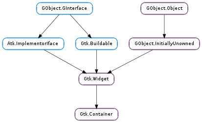

| add(widget) | |
| check_resize() | |
| child_get_property(child, property_name, value) | |
| child_notify(child, child_property) | |
| child_set_property(child, property_name, value) | |
| child_type() | |
| forall(callback, *callback_data) | |
| foreach(callback, *callback_data) | |
| get_border_width() | |
| get_children() | |
| get_focus_chain() | |
| get_focus_child() | |
| get_focus_hadjustment() | |
| get_focus_vadjustment() | |
| get_path_for_child(child) | |
| get_resize_mode() | |
| propagate_draw(child, cr) | |
| remove(widget) | |
| resize_children() | |
| set_border_width(border_width) | |
| set_focus_chain(focusable_widgets) | |
| set_focus_child(child) | |
| set_focus_hadjustment(adjustment) | |
| set_focus_vadjustment(adjustment) | |
| set_reallocate_redraws(needs_redraws) | |
| set_resize_mode(resize_mode) | |
| unset_focus_chain() |
| Name | Type | Flags | Description |
|---|---|---|---|
| border-width | int | r/w | The width of the empty border outside the containers children |
| child | Gtk.Widget | w | Can be used to add a new child to the container |
| resize-mode | Gtk.ResizeMode | r/w | Specify how resize events are handled |
| Name | Parameters | Return | Description |
|---|---|---|---|
| add | Gtk.Widget | Adds widget to container. Typically used for simple containers such as Gtk.Window, Gtk.Frame, or Gtk.Button ; for more complicated layout containers such as Gtk.Box or Gtk.Grid, this function will pick default packing parameters that may not be correct. So consider functions such as Gtk.Box.pack_start () and Gtk.Grid.attach () as an alternative to Gtk.Container.add () in those cases. A widget may be added to only one container at a time; you can’t place the same widget inside two different containers. Note that some containers, such as Gtk.ScrolledWindow or Gtk.ListBox, may add intermediate children between the added widget and the container. | |
| check-resize | |||
| remove | Gtk.Widget | Removes widget from container. widget must be inside container. Note that container will own a reference to widget, and that this may be the last reference held; so removing a widget from its container can destroy that widget. If you want to use widget again, you need to add a reference to it while it’s not inside a container, using GObject.Object.ref (). If you don’t want to use widget again it’s usually more efficient to simply destroy it directly using Gtk.Widget.destroy () since this will remove it from the container and help break any circular reference count cycles. | |
| set-focus-child | Gtk.Widget |
| Name | Type | Access |
|---|---|---|
| widget | Gtk.Widget | r |
Bases: Gtk.Widget
A GTK+ user interface is constructed by nesting widgets inside widgets. Container widgets are the inner nodes in the resulting tree of widgets: they contain other widgets. So, for example, you might have a Gtk.Window containing a Gtk.Frame containing a Gtk.Label. If you wanted an image instead of a textual label inside the frame, you might replace the Gtk.Label widget with a Gtk.Image widget.
There are two major kinds of container widgets in GTK+. Both are subclasses of the abstract Gtk.Container base class.
The first type of container widget has a single child widget and derives from Gtk.Bin. These containers are decorators, which add some kind of functionality to the child. For example, a Gtk.Button makes its child into a clickable button; a Gtk.Frame draws a frame around its child and a Gtk.Window places its child widget inside a top-level window.
The second type of container can have more than one child; its purpose is to manage layout. This means that these containers assign sizes and positions to their children. For example, a Gtk.HBox arranges its children in a horizontal row, and a Gtk.Grid arranges the widgets it contains in a two-dimensional grid.
Height for width geometry management
GTK+ uses a height-for-width (and width-for-height) geometry management system. Height-for-width means that a widget can change how much vertical space it needs, depending on the amount of horizontal space that it is given (and similar for width-for-height).
There are some things to keep in mind when implementing container widgets that make use of GTK+’s height for width geometry management system. First, it’s important to note that a container must prioritize one of its dimensions, that is to say that a widget or container can only have a Gtk.SizeRequestMode that is Gtk.SizeRequestMode.HEIGHT_FOR_WIDTH or Gtk.SizeRequestMode.WIDTH_FOR_HEIGHT. However, every widget and container must be able to respond to the APIs for both dimensions, i.e. even if a widget has a request mode that is height-for-width, it is possible that its parent will request its sizes using the width-for-height APIs.
To ensure that everything works properly, here are some guidelines to follow when implementing height-for-width (or width-for-height) containers.
Each request mode involves 2 virtual methods. Height-for-width apis run through Gtk.Widget.get_preferred_width () and then through Gtk.Widget.get_preferred_height_for_width (). When handling requests in the opposite Gtk.SizeRequestMode it is important that every widget request at least enough space to display all of its content at all times.
When Gtk.Widget.get_preferred_height () is called on a container that is height-for-width, the container must return the height for its minimum width. This is easily achieved by simply calling the reverse apis implemented for itself as follows:
static void
foo_container_get_preferred_height (GtkWidget *widget, gint *min_height, gint *nat_height)
{
if (i_am_in_height_for_width_mode)
{
gint min_width;
GTK_WIDGET_GET_CLASS (widget)->get_preferred_width (widget, &min_width, NULL);
GTK_WIDGET_GET_CLASS (widget)->get_preferred_height_for_width (widget, min_width,
min_height, nat_height);
}
else
{
... many containers support both request modes, execute the real width-for-height
request here by returning the collective heights of all widgets that are
stacked vertically (or whatever is appropriate for this container) ...
}
}
Similarly, when Gtk.Widget.get_preferred_width_for_height () is called for a container or widget that is height-for-width, it then only needs to return the base minimum width like so:
static void
foo_container_get_preferred_width_for_height (GtkWidget *widget, gint for_height,
gint *min_width, gint *nat_width)
{
if (i_am_in_height_for_width_mode)
{
GTK_WIDGET_GET_CLASS (widget)->get_preferred_width (widget, min_width, nat_width);
}
else
{
... execute the real width-for-height request here based on the required width
of the children collectively if the container were to be allocated the said height ...
}
}
Height for width requests are generally implemented in terms of a virtual allocation of widgets in the input orientation. Assuming an height-for-width request mode, a container would implement the get_preferred_height_for_width() virtual function by first calling Gtk.Widget.get_preferred_width () for each of its children.
For each potential group of children that are lined up horizontally, the values returned by Gtk.Widget.get_preferred_width () should be collected in an array of Gtk.RequestedSize structures. Any child spacing should be removed from the input for_width and then the collective size should be allocated using the Gtk.distribute_natural_allocation () convenience function.
The container will then move on to request the preferred height for each child by using Gtk.Widget.get_preferred_height_for_width () and using the sizes stored in the Gtk.RequestedSize array.
To allocate a height-for-width container, it’s again important to consider that a container must prioritize one dimension over the other. So if a container is a height-for-width container it must first allocate all widgets horizontally using a Gtk.RequestedSize array and Gtk.distribute_natural_allocation () and then add any extra space (if and where appropriate) for the widget to expand.
After adding all the expand space, the container assumes it was allocated sufficient height to fit all of its content. At this time, the container must use the total horizontal sizes of each widget to request the height-for-width of each of its children and store the requests in a Gtk.RequestedSize array for any widgets that stack vertically (for tabular containers this can be generalized into the heights and widths of rows and columns). The vertical space must then again be distributed using Gtk.distribute_natural_allocation () while this time considering the allocated height of the widget minus any vertical spacing that the container adds. Then vertical expand space should be added where appropriate and available and the container should go on to actually allocating the child widgets.
See Gtk.Widget ‘s geometry management section to learn more about implementing height-for-width geometry management for widgets.
Child properties
Gtk.Container introduces child properties. These are object properties that are not specific to either the container or the contained widget, but rather to their relation. Typical examples of child properties are the position or pack-type of a widget which is contained in a Gtk.Box.
Use Gtk.ContainerClass.install_child_property () to install child properties for a container class and Gtk.ContainerClass.find_child_property () or Gtk.ContainerClass.list_child_properties () to get information about existing child properties.
To set the value of a child property, use Gtk.Container.child_set_property (), Gtk.Container.child_set () or Gtk.Container.child_set_valist (). To obtain the value of a child property, use Gtk.Container.child_get_property (), Gtk.Container.child_get () or Gtk.Container.child_get_valist (). To emit notification about child property changes, use Gtk.Widget.child_notify ().
Gtk.Container as Gtk.Buildable
The Gtk.Container implementation of the Gtk.Buildable interface supports a <packing> element for children, which can contain multiple <property> elements that specify child properties for the child.
Child properties in UI definitions
<object class="GtkVBox">
<child>
<object class="GtkLabel" />
<packing>
<property name="pack-type">start</property>
</packing>
</child>
</object>
Since 2.16, child properties can also be marked as translatable using the same “translatable”, “comments” and “context” attributes that are used for regular properties.
| Parameters: | widget (Gtk.Widget) – a widget to be placed inside container |
|---|
Adds widget to container. Typically used for simple containers such as Gtk.Window, Gtk.Frame, or Gtk.Button ; for more complicated layout containers such as Gtk.Box or Gtk.Grid, this function will pick default packing parameters that may not be correct. So consider functions such as Gtk.Box.pack_start () and Gtk.Grid.attach () as an alternative to Gtk.Container.add () in those cases. A widget may be added to only one container at a time; you can’t place the same widget inside two different containers.
Note that some containers, such as Gtk.ScrolledWindow or Gtk.ListBox, may add intermediate children between the added widget and the container.
| Parameters: |
|
|---|
Gets the value of a child property for child and container.
| Parameters: |
|
|---|
Emits a Gtk.Widget ::child-notify signal for the child property child_property on widget.
This is an analogue of GObject.Object.notify () for child properties.
Also see Gtk.Widget.child_notify ().
| Parameters: |
|
|---|
Sets a child property for child and container.
| Returns: | a GObject.Type. |
|---|---|
| Return type: | GObject.GType |
Returns the type of the children supported by the container.
Note that this may return GObject.TYPE_NONE to indicate that no more children can be added, e.g. for a Gtk.Paned which already has two children.
| Parameters: |
|
|---|
Invokes callback on each child of container, including children that are considered “internal” (implementation details of the container). “Internal” children generally weren’t added by the user of the container, but were added by the container implementation itself. Most applications should use Gtk.Container.foreach (), rather than Gtk.Container.forall ().
| Parameters: |
|
|---|
Invokes callback on each non-internal child of container. See Gtk.Container.forall () for details on what constitutes an “internal” child. Most applications should use Gtk.Container.foreach (), rather than Gtk.Container.forall ().
| Returns: | the current border width |
|---|---|
| Return type: | int |
Retrieves the border width of the container. See Gtk.Container.set_border_width ().
| Returns: | a newly-allocated list of the container’s non-internal children. |
|---|---|
| Return type: | [Gtk.Widget] |
Returns the container’s non-internal children. See Gtk.Container.forall () for details on what constitutes an “internal” child.
Retrieves the focus chain of the container, if one has been set explicitly. If no focus chain has been explicitly set, GTK+ computes the focus chain based on the positions of the children. In that case, GTK+ stores None in focusable_widgets and returns False.
| Returns: | The child widget which will receive the focus inside container when the conatiner is focussed, or None if none is set. |
|---|---|
| Return type: | Gtk.Widget |
Returns the current focus child widget inside container. This is not the currently focused widget. That can be obtained by calling Gtk.Window.get_focus ().
| Returns: | the horizontal focus adjustment, or None if none has been set. |
|---|---|
| Return type: | Gtk.Adjustment |
Retrieves the horizontal focus adjustment for the container. See Gtk.Container.set_focus_hadjustment ().
| Returns: | the vertical focus adjustment, or None if none has been set. |
|---|---|
| Return type: | Gtk.Adjustment |
Retrieves the vertical focus adjustment for the container. See Gtk.Container.set_focus_vadjustment ().
| Parameters: | child (Gtk.Widget) – a child of container |
|---|---|
| Returns: | A newly created Gtk.WidgetPath |
| Return type: | Gtk.WidgetPath |
Returns a newly created widget path representing all the widget hierarchy from the toplevel down to and including child.
| Returns: | the current resize mode |
|---|---|
| Return type: | Gtk.ResizeMode |
Returns the resize mode for the container. See Gtk.Container.set_resize_mode ().
| Parameters: |
|
|---|
When a container receives a call to the draw function, it must send synthetic Gtk.Widget ::draw calls to all children that don’t have their own Gdk.Windows. This function provides a convenient way of doing this. A container, when it receives a call to its Gtk.Widget ::draw function, calls Gtk.Container.propagate_draw () once for each child, passing in the cr the container received.
Gtk.Container.propagate_draw () takes care of translating the origin of cr, and deciding whether the draw needs to be sent to the child. It is a convenient and optimized way of getting the same effect as calling Gtk.Widget.draw () on the child directly.
In most cases, a container can simply either inherit the Gtk.Widget ::draw implementation from Gtk.Container, or do some drawing and then chain to the ::draw implementation from Gtk.Container.
| Parameters: | widget (Gtk.Widget) – a current child of container |
|---|
Removes widget from container. widget must be inside container. Note that container will own a reference to widget, and that this may be the last reference held; so removing a widget from its container can destroy that widget. If you want to use widget again, you need to add a reference to it while it’s not inside a container, using GObject.Object.ref (). If you don’t want to use widget again it’s usually more efficient to simply destroy it directly using Gtk.Widget.destroy () since this will remove it from the container and help break any circular reference count cycles.
| Parameters: | border_width (int) – amount of blank space to leave outside the container. Valid values are in the range 0-65535 pixels. |
|---|
Sets the border width of the container.
The border width of a container is the amount of space to leave around the outside of the container. The only exception to this is Gtk.Window ; because toplevel windows can’t leave space outside, they leave the space inside. The border is added on all sides of the container. To add space to only one side, one approach is to create a Gtk.Alignment widget, call Gtk.Widget.set_size_request () to give it a size, and place it on the side of the container as a spacer.
| Parameters: | focusable_widgets ([Gtk.Widget]) – the new focus chain |
|---|
Sets a focus chain, overriding the one computed automatically by GTK+.
In principle each widget in the chain should be a descendant of the container, but this is not enforced by this method, since it’s allowed to set the focus chain before you pack the widgets, or have a widget in the chain that isn’t always packed. The necessary checks are done when the focus chain is actually traversed.
| Parameters: | child (Gtk.Widget or None) – a Gtk.Widget, or None |
|---|
Sets, or unsets if child is None, the focused child of container.
This function emits the Gtk.Container ::set-focus-child signal of container. Implementations of Gtk.Container can override the default behaviour by overriding the class closure of this signal.
This is function is mostly meant to be used by widgets. Applications can use Gtk.Widget.grab_focus () to manualy set the focus to a specific widget.
| Parameters: | adjustment (Gtk.Adjustment) – an adjustment which should be adjusted when the focus is moved among the descendents of container |
|---|
Hooks up an adjustment to focus handling in a container, so when a child of the container is focused, the adjustment is scrolled to show that widget. This function sets the horizontal alignment. See Gtk.ScrolledWindow.get_hadjustment () for a typical way of obtaining the adjustment and Gtk.Container.set_focus_vadjustment () for setting the vertical adjustment.
The adjustments have to be in pixel units and in the same coordinate system as the allocation for immediate children of the container.
| Parameters: | adjustment (Gtk.Adjustment) – an adjustment which should be adjusted when the focus is moved among the descendents of container |
|---|
Hooks up an adjustment to focus handling in a container, so when a child of the container is focused, the adjustment is scrolled to show that widget. This function sets the vertical alignment. See Gtk.ScrolledWindow.get_vadjustment () for a typical way of obtaining the adjustment and Gtk.Container.set_focus_hadjustment () for setting the horizontal adjustment.
The adjustments have to be in pixel units and in the same coordinate system as the allocation for immediate children of the container.
| Parameters: | needs_redraws (bool) – the new value for the container’s reallocate_redraws flag |
|---|
Sets the reallocate_redraws flag of the container to the given value.
Containers requesting reallocation redraws get automatically redrawn if any of their children changed allocation.
| Parameters: | resize_mode (Gtk.ResizeMode) – the new resize mode |
|---|
Sets the resize mode for the container.
The resize mode of a container determines whether a resize request will be passed to the container’s parent, queued for later execution or executed immediately.
Removes a focus chain explicitly set with Gtk.Container.set_focus_chain ().